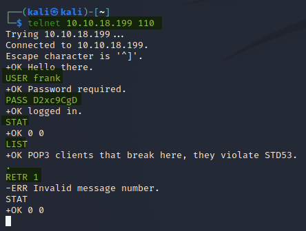

Email Protocols
Contents
Email Protocols¶
SMTP¶
SMTP, or Simple Mail Transfer Protocol is a common mail transfer method. It can be used offline but in the large majority of cases it is used between web servers. It is hosted on port 25 by default.
A number of acrynoms are used with SMTP
MSA: Mail Submission Agent, who the email is first passed to, and the forwards to the MTA.
MTA: Mail Transmission Agent, the server in between the MSA and MDA
MDA: Mail Delivery Agent, the final server where the email is sent to
MUA: Mail user agent, the device which first sends the email to the MSA, or who queries the MDA to read the delivered email.
A single server could be a combination of the MSA/MTA or MTA/MDA.
Connecting SMTP¶
Normally we would use a web browser or email client to transfer emails, but telnet shows what is going on underneath.
Telnet [IP] 25
helo [hostname], telnet is fine
mail from: [who the email is from]
rcpt to: [who is the email being sent to]
data (enter) [type your message]
to end: (enter) . (enter)
quit : to exit
The mail message is ended by “< CR >< LF >.< CR >< LF >”
POP3¶
POP3, or Post Office Protocol 3, differs from SMTP in which it downloads the delivered email from the MDA and then deletes it from the server (normally). This means the emails can be handled offline (and sent later) for example but can also be desync-d by using multiple clients.
POP3 is hosted on port 110 by default.
Connecting POP3¶
As with SMTP, you would normally use an email client, but telnet can be used too.
telnet [IP] 110
USER [username to authenticate]
Password [password for the user]
STAT, you will recieve back “+OK nn mm”. nn is the emails to sync, mm is the size of the inbox in octets.
LIST, lists the messages in the inbox
RETR 1, give me the first email in the inbox
